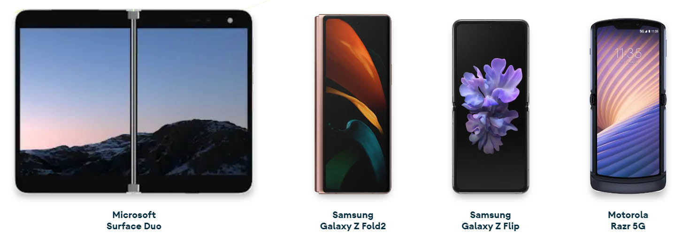

Sistema operativo Android
Proyecto #1 de sistemas operativos
Introducción
Android es un sistema operativo basado en el núcleo de Linux, utilizado mayormente en dispositivos de pantalla táctil. Es desarrollado mayormente por Google (el mayor patrocinador del proyecto) y la Open Handset Alliance (alianza del dispositivo móvil abierto, por sus siglas en inglés).
Es un software de fuente abierta, por lo que su código puede ser visto, modificado o copiado. Está licenciado bajo la licencia general pública GNU. Es implementado y utilizado por una gran diversidad de empresas. Se ha convertido en el sistema operativo más utilizado gracias a su versatilidad de uso e implementación en dispositivos de consumo masivo, no solamente donde se puedan desarrollar aplicaciones de terceros, sino también como sistema embebido en dispositivos dedicados que requieran una interfaz (dispositivos médicos, relojes inteligentes, pantallas de automóviles, entre otros).
A pesar de ello, involucra software propietario a diferencia de otras distribuciones de Linux. Algunos ejemplos son aplicaciones de Google (Google Chrome, Gmail) y GMS (Google Movile Services). Estas están incluidas en la gran mayoría de dispositivos móviles. Incluso el nombre es propiedad intelectual de la empresa Google, de manera que no se pueden comercializar productos utilizándolo.
Este sistema operativo utiliza muchas de las propiedades características del núcleo de Linux, como lo son: sistema de archivos, memoria virtual, procesos, identificación de usuarios, entre otros. Ha sido mayormente desarrollado en Java (interfaz), aunque el núcleo y algunas librerías de bajo nivel fueron escritas en C y C++. La empresa que más ha aportado a su desarrollo es Google.
En este proyecto pretendemos exponer información acerca del mismo, de manera que el lector pueda comprender algunas de sus características. Se mostrará una breve reseña histórica, se detallarán sus requerimientos y se realizará una comparación con otros 2 sistemas operativos, respecto a las ventajas y desventajas de cada uno. Se expondrán imágenes, hipervínculos y un video ilustrativo, entre otros.
Esperamos que este blog sea de su agrado, y pueda aprender más sobre Android.
Breve reseña histórica
- Sus inicios se remontan a principios de la década del 2000. Este proyecto fue creado originalmente por la empresa Android, Inc. con el propósito de desarrollar dispositivos móviles inteligentes.
- En Julio del 2005, Google adquirió la empresa Android, Inc. y se convirtió en el patrocinador financiero más importante del proyecto.
- A inicio del 2006 se tomó la gran decisión de limitar el desarrollo de aplicaciones para el sistema al lenguaje de programación Java.
- Para junio de 2006 se habían desarrollado 2 dispositivos físicos que utilizaban Android. Uno de denominó “Sooner” y estaba basado en modelos existentes con teclado QUERTY, con el objetivo de llevar el producto lo más rápido posible al mercado. El segundo se denominó “Dream”, diseñado con una pantalla táctil relativamente grande (para la época), tomando en consideración toda visión original que se tenía para el sistema operativo. Al final se descartó el proyecto “Sooner”, para enfocarse mayormente en la versión con pantalla táctil.
- La primera aparición pública fue en noviembre de 2007: un preliminar del SDK (software development kit) que corría en un emulador de hardware, con Android instalado. También se mostraron videos del sistema operativo funcionando en los proyectos “Sooner” y “Dream”.
- El primer celular lanzado al público con Android fue HTC Dream, el septiembre de 2008.
- En mayo de 2019, el sistema operativo se vio involucrado en la guerra comercial entre EEUU y China. Estados Unidos prohibió su utilización por la empresa HuaWei, lo cual instó a que desarrollaran su propio sistema operativo: HarmonyOs.
Detalles del sistema operativo
Imágenes

Primer teléfono con el sistema operativo Android. (Behar, 2018)

(Desarrolladores del sitio de Android, n.d.)
Requerimientos
- Procesador de 1 GHz
- RAM 512 MB
- Pantalla de 3,5 pulgadas de largo
- Es posible instalar el sistema operativo Android en teléfonos iPhone 2G o 3G
- Está adaptado para su instalación en PC/portátiles.
Junto a Google TV, la pantalla más grande para Android es una tableta de 10.1 pulgadas. Esto no significa que el sistema operativo esté limitado por este tamaño. SKR Technology ha construido un prototipo de interfaz de 32 pulgadas con Android Gingerbread. La pantalla gigante refleja las actividades de una estación mucho más pequeña conectada a través de USB. Gracias a los controladores personalizados, la pantalla de 32 pulgadas es el único hardware necesario para ejecutar una instalación estándar de Android 2.3 en una gran pantalla HD, que admite gestos, zoom y más.
No es el típico dispositivo Android al que estamos acostumbrados, pero es divertido de usar. Para los anuncios gráficos y las aplicaciones interactivas, es probable que Android ocupe una posición importante en este mercado. La tecnología SKR trabaja principalmente en cartelería digital, por lo que imaginamos que se utilizará esta interfaz para ello. La compañía planea lanzar pantallas de hasta 46 pulgadas en el futuro.
Los Principales Requerimientos para instalar Android Studio en Windows son:
- Microsoft® Windows® 8/7/Vista/2003 (32 or 64-bit) Lógicamente se necesita tener el sistema operativo Windows si aquí lo vamos a instalar, pero la versión mínima es Windows 2003.
- En memoria RAM se necesitan mínimo 2 GB RAM, y la recomendación que se hace en la página web es 4 GB RAM recomendado.
- Espacio en el disco duro al momento de descargar el instalador y los Android SDK en su versión 5 son 400 MB después de la instalación el espacio que ocupará es de 1 GB que será utilizado para Android SDK, imágenes de emuladores y caches.
- La resolución mínima de la pantalla con la que debe contar nuestra computadora donde queremos correr Android Studio es de 1280 x 800.
- Java Development Kit (JDK) mínimo en su versión 7.
Cuadro comparativo de algunos sistemas operativos móviles
| Android | IOS | Blackberry OS | |
|---|---|---|---|
Características |
|
|
|
Ventajas |
|
|
|
Desventajas |
|
|
|
Video ilustrativo:
Hipervínculos
- Sitio oficial de Android
- Sitio para desarrolladores de Android
- Wiki fandom de Android
- Subreddit de Android
- Proyecto de Android en Github
Conclusiones
Francisco Pérez
Android es un sistema operativo con características intrigantes. Es respaldado por una gran empresa privada a pesar que su licencia de software libre le permitió ser utilizado por muchas otras empresas. Fue diseñado para dispositivos de consumo masivo, lo cual le permitió superar a Windows (un sistema operativo de computadoras) como el sistema operativo más utilizado. Esto no evitó que fuese implementado en dispositivos de cualquier tipo: desde televisores hasta relojes inteligentes.
Su emergencia junto a iOs señalizaron el inicio de la era de los dispositivos móviles inteligentes. Android es una adaptación a circunstancias cambiantes en el mundo de la tecnología, y una historia de éxito del software abierto (e incluso del núcleo Linux). Debido a su importancia, es necesario e inevitable aprender su utilización. Como ingenieros de software debemos comprender sus propiedades para poder diseñar y desarrollar aplicaciones que aprovechen el potencial de mercado que ofrece.
Alejandro Andrade
El Sistema Operativo Android es un sistema operativo que no esta ni cerca de ser perfecto, pero esta en constante mejora lo cual le da un valor agregado.
Hoy en dia, Android es un sistema operatvivo altamente personalizable en la cual si se tienen conocimientos avanzados es posible modificar ciertas cosas del sistema operativo, ademas cuenta con un soporte para una amplia gama de diferentes dispositivos, lo que permite escoger entre una gran variedad de equipos de acuerdo con tus necesidades y capacidades económicas.
Melitón Rodríguez
Android es un sistema operativo muy completo y versátil para los dispositivos móviles. Él ha logrado permanecer liderando el mercado de OS junto a IOS en el mercado de dispositivos móviles. Desde la salida de los dispositivos móviles han existido varias empresas como Blackberry, Windows y otros tratando de competir, pero las a la fecha actual, han tenido que mudarse a Android.
Android posee sus ventajas y defectos, pero en mi opinión, gracias a su personalización (siendo un usuario con algo de conocimiento sobre software) es el sistema operativo más completo para móviles que existe para móviles. También, siendo de software libre, tiene una de las empresas más grandes del mundo respaldando su desarrollo.
Susana González
El Sistema Operativo Android ofrece un entorno de desarrollo que facilita la implementación de aplicaciones y versiones de manera ágil y práctico,aprovechando al máximo las características de cada dispositivo móvil.
Android se puede describir como un sistema Operativo robusto, rápido y estable, con un soporte para una amplia gama de diferentes dispositivos; teniendo así una gran diferencia entre otros dispositivos móviles.
En conclusión Android es Sistema Operativo necesario en los teléfonos móviles.
Referencias
- Mejores Sistemas Operativos para Móviles. Listas ▷ 2021. (2019, noviembre 6). Internet Paso a Paso. https://internetpasoapaso.com/mejores-sistemas-operativos-moviles/
- García, M. (2021). Android vs. iOS: ¡Batalla de sistemas operativos 2022! Https://Www.crehana.com; Crehana. https://www.crehana.com/blog/desarrollo-web/android-vs-ios/
- Camilo Vergara. (2011). Ventajas y Desventajas del Black Berry OS Tablet. Blogspot.com. https://blackberryostablet.blogspot.com/p/ventajas-y-desventajas-del-black-berry.html
- Desarrolladores del sitio de Android. (n.d.). Phones & Tablets. Retrieved from android.com: https://www.android.com/phones-tablets/
- Actuandrioid. (s.f.). Requerimientos de hardware para instalación del S.O ANDROID. Obtenido de Actuandrioid: https://sites.google.com/site/actuandrioid/home/historia/-quien-fue-el-que-creo-andriod/caracteristicas/recursos-minimos-para-instalar
- Tanenbaum, A., & Bos, H. (n.d.). Modern operating systems. Amsterdam: Pearson.
- Wikimedia foundation. (2007, agosto 4). Android (operating_system). Retrieved from en.wikipedia.org: https://en.wikipedia.org/wiki/Android_(operating_system)
- Hill, S. (31 de octubre de 2018). Who’s Bugdroid? Meet the cute mascot of Android. Obtenido de digitaltrends.com: https://www.digitaltrends.com/mobile/who-is-bugdroid-the-story-of-androids-mascot/
- Behar, R. (29 de octubre de 2018). A look back at the first Android phone, 10 years later. Obtenido de digitaltrends.com: https://www.digitaltrends.com/mobile/first-android-phone-ever/
- simpleicon. (s.f.). Android. Obtenido de simpleicon.com: http://simpleicon.com/android.html
Datos generales
Fotos y nombres de los integrantes del grupo:
Alejandro Andrade (4-807-477)
Francisco Pérez (8-841-1013)
Meliton Rodríguez (2-743-2236)
Susana González (3-741-2004)
Nombre de la profesora: Amarilis Alvarado de Araya
Institución: Universidad Tecnológica de Panamá
Facultad: Facultad de ingeniería de sistemas computacionales
Departamento: Departamento de ingeniería de software
Carrera: Licenciatura de ingeniería de software
Grupo: 1sf132